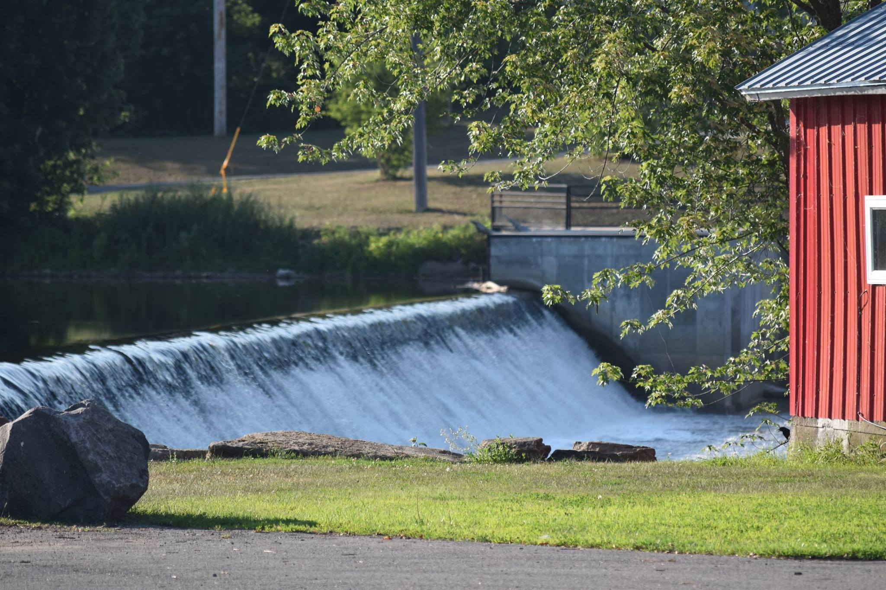
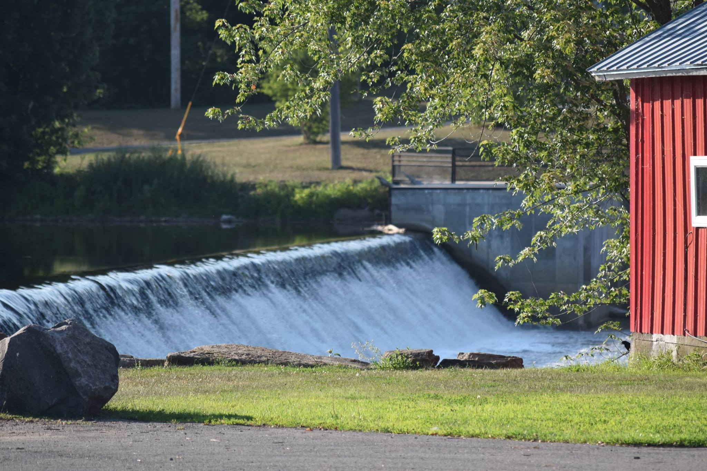

Summer 2022 Schedule
All performances take place on Wednesdays from 6:00- 8:00 pm at the Madrid Park (unless otherwise noted).
June 15 Ice Cream Social hosted by MDMS and the United Methodist Church
June 22 LTD and Chaser
June 29 Steelin’ Country
Our MDMS 50th performance!
July 6 December Wind
July 13 11B
July 20 Potsdam Community Band
(At the St. Lawrence Power and Equipment Museum)
July 27 Open Mic Talent Show with The Susie Q’s
August 3 Madrid Community Chorus and Jeff Hinkle
August 10 Veterans’ Tribute Night Band TBD
With a ceremony that includes Bag Piper Robert House
August 17 Madrid Waddington Central School Tri-M Musical group and Another Roadside Attraction

 
